MQDesk 是一款桌面版 RabbitMQ 可视化管控工具。
你可以把它理解成一个“消息队列的图形化管理小助手”。它能帮你：
| 场景 | 没有 MQDesk 时 | 有了 MQDesk 后 |
|---|---|---|
| 想查看队列有多少消息 | 要打开英文管理后台，找半天 | 打开软件总览页，数字直接显示 |
| 怀疑消息没发出去 | 要写代码测试或查日志 | 点几下就能发一条测试消息 |
| 队列消息堆积了 | 看不到，等问题爆发 | 健康状态变红/黄，提前预警 |
| 忘了连接密码 | 明文写在配置文件里 | 本地加密保存，更安全 |
| 需要清空测试队列 | 写脚本或调接口 | 队列详情页一键 Purge |
| 想看消息被谁消费 | 翻日志、写消费者 | 消费者工作室直接启动并查看 |
| 项目 | 要求 |
|---|---|
| 操作系统 | Windows 10/11（64 位）或兼容的 Linux 发行版（如麒麟） |
| 内存 | 至少 4GB |
| 硬盘空间 | 至少 200MB 可用空间 |
| 网络 | 能访问你要连接的 RabbitMQ 服务器 |
| 依赖组件 | 已内置，无需单独安装 |
什么是 RabbitMQ？ 它是一种“消息中间件”，负责在不同程序之间传递消息。如果你还没安装 RabbitMQ，可以先让同事或运维给你一个连接地址，再使用 MQDesk。
从发布页面下载对应系统的安装文件：
MQDesk_0.1.0_x64-setup.exemqdesk_0.1.0_amd64.deb 或 MQDesk_0.1.0_amd64.AppImage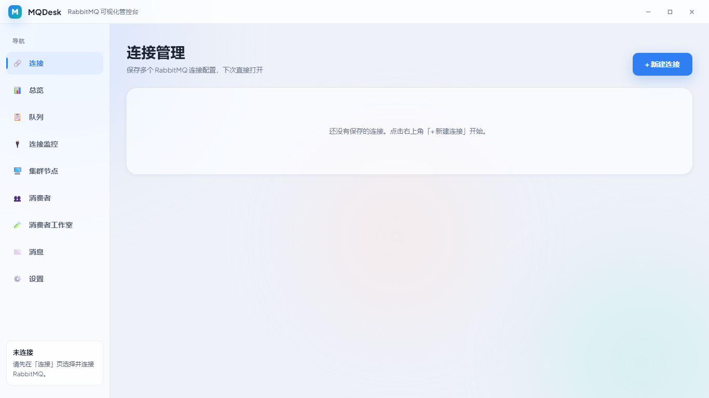
图 2-1：MQDesk 首次启动后的连接管理页面
第一次打开 MQDesk，你会看到「连接管理」页面。此时还没有保存任何连接，点击「新建连接」开始。
图 2-2：连接 RabbitMQ 后的总览仪表盘界面
MQDesk 主界面分为三个主要区域：
图 3-1：总览页布局——① 标题栏、② 侧边栏、③ 内容区
标题栏位于窗口最顶部，包含 MQDesk Logo、窗口标题、最小化/最大化/关闭按钮。
侧边栏是功能导航入口：
| 按钮 | 名称 | 作用 |
|---|---|---|
| 🔌 连接 | 连接管理 | 新建、编辑、删除、切换 RabbitMQ 连接 |
| 📊 总览 | 总览仪表盘 | 查看整体健康状态和关键数字 |
| 📋 队列 | 队列列表 | 查看所有队列、搜索、筛选、分页浏览 |
| 🖥️ 集群节点 | 集群节点 | 查看 RabbitMQ 节点运行状态与资源使用 |
| 👥 消费者 | 消费者列表 | 查看当前在线消费者及其消费速率 |
| 🧪 消费者工作室 | 消费者工作室 | 手动启动消费者，实时查看消息内容 |
| ✉️ 消息 | 消息发送 | 发送测试消息并查看记录 |
| ⚙️ 设置 | 设置 | 切换主题、自动刷新、查看术语表、打开本手册 |
内容区会随侧边栏切换显示不同页面。当前选中的导航按钮会高亮显示。
关闭窗口后，MQDesk 会继续运行在系统托盘中：
「连接管理」用于保存你要管理的 RabbitMQ 服务地址、用户名、密码等信息。
就像微信需要保存账号密码一样，MQDesk 也需要先保存 RabbitMQ 的连接信息，才能帮你查看队列、发送消息。
| 字段 | 填写说明 | 示例 |
|---|---|---|
| 连接名称 | 给这个连接起个名字，方便识别 | 开发环境 |
| 主机地址 | RabbitMQ 服务器地址 | 127.0.0.1 或 mq.example.com |
| AMQP 端口 | 消息传输端口，默认 5672 | 5672 |
| 管理端口 | 网页管理接口端口，默认 15672 | 15672 |
| 管理协议 | 一般选 http | http |
| 虚拟空间 | 默认填写 / | / |
| 用户名 | RabbitMQ 登录用户名 | guest |
| 密码 | RabbitMQ 登录密码 | guest |
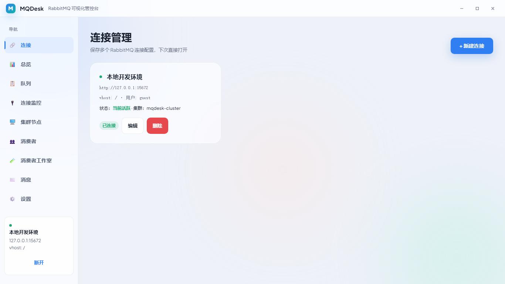
图 4-1：新建连接表单
「总览」是 MQDesk 的“首页”，用一句话和几个数字卡片告诉你 RabbitMQ 当前整体状态。
就像手机健康 App 每天告诉你“步数、睡眠、心率”一样，总览让你不用逐个队列检查，就能快速判断系统是否健康。
连接成功后，软件会自动跳转到总览页，显示以下内容：
| 区域 | 说明 |
|---|---|
| 健康状态横幅 | 一句话总结当前状态 |
| 队列总数 | 当前有多少个队列 |
| 交换机总数 | 当前有多少个交换机 |
| 待消费消息 | 所有队列中等待被消费的消息总数 |
| 在线消费者 | 当前有多少个消费者程序在线 |
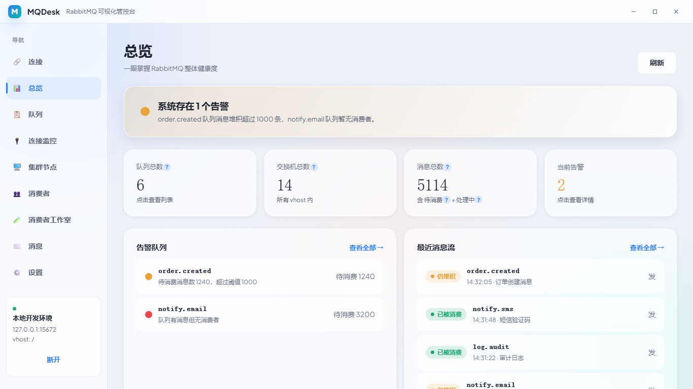
图 4-2：总览仪表盘
| 颜色 | 状态 | 含义 |
|---|---|---|
| 绿色 | 正常 | 队列有消费者，消息没有堆积 |
| 黄色 | 堆积预警 | 某个队列消息数超过 1000，需要关注 |
| 红色 | 无人消费 | 队列有消息，但没有消费者处理 |
| 灰色 | 空闲 | 队列里没有消息，也没有消费者 |
总览页默认会自动刷新。你可以在「设置 → 自动刷新」中开启/关闭，或调整刷新间隔。关闭后数字不会自动更新，需要手动切换页面或点击刷新按钮。
「队列」页面列出当前 RabbitMQ 中的所有队列，并显示每个队列的健康状态。
当你怀疑某个业务出问题（例如订单没处理、短信没发送），可以先看队列列表，快速定位是不是消息卡住了。
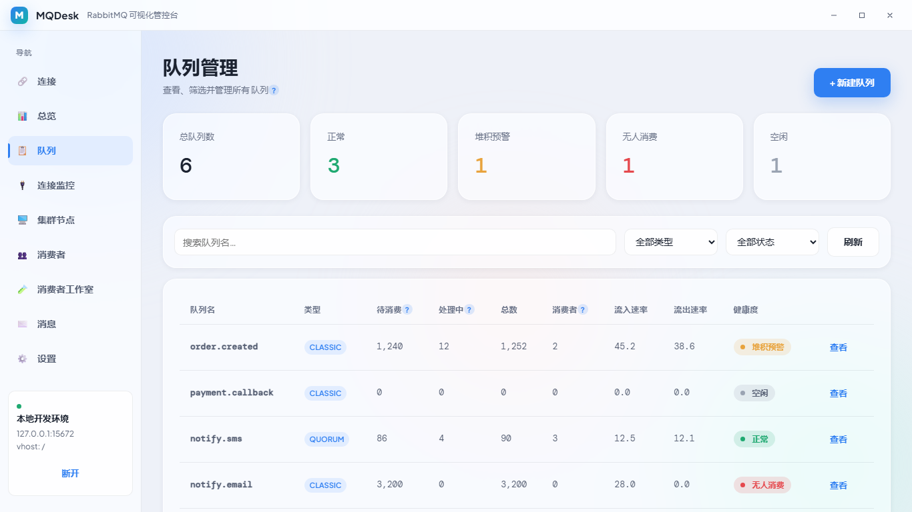
图 4-3：队列列表——支持搜索、筛选、分页
当队列数量很多时，列表采用虚拟滚动技术，只渲染当前可见的行，保证首屏加载快、滚动流畅。你无需担心一次性加载几万个队列会卡顿。
「队列详情」展示某个具体队列的实时数据，包括消息数量、消费者数量、消息速率、绑定规则等。
当你发现某个队列健康状态异常（红色/黄色），需要进入详情页看具体数字，判断问题有多严重。
| 区域 | 说明 |
|---|---|
| 健康状态卡片 | 显示当前队列健康状态 |
| 核心指标 | 待消费、处理中、消费者数、消息速率 |
| 速率折线图 | 近一段时间的消息流入/流出趋势 |
| 绑定规则 | 查看与该队列绑定的交换机及路由键 |
| 抓取预览 | 查看队列前几条消息内容，不会真正消费 |
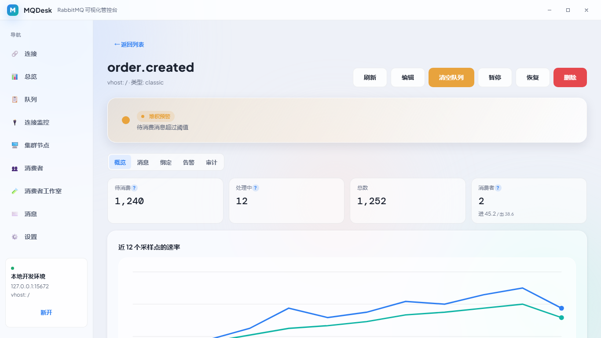
图 4-4：队列详情页面
「清空队列」用于删除队列里的所有消息，但保留队列本身。
测试环境经常有大量脏数据，Purge 可以一键清理，不用删除队列再重建。
注意：Purge 会永久删除消息，生产环境请谨慎操作。
「绑定规则」定义了交换机如何把消息路由到队列。在 MQDesk 中，你可以查看某个队列的所有绑定，并删除不再需要的绑定。
消息没有进入预期队列时，往往是绑定规则配错了。在这里可以直接看到“哪个交换机通过什么路由键绑到了这个队列”。
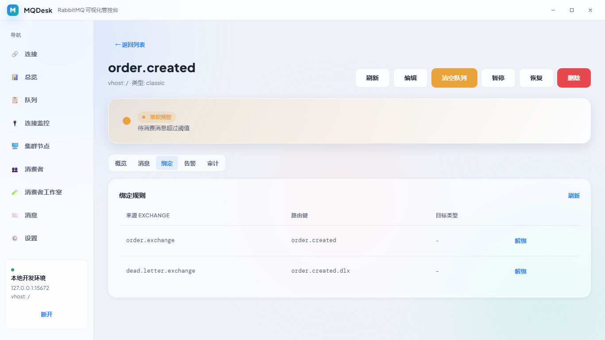
图 4-5：队列详情中的绑定管理
注意：删除绑定后，交换机将不再把匹配的消息路由到该队列。如果是生产队列，请确认影响后再操作。
「集群节点」页面展示 RabbitMQ 集群中每个节点的运行状态、内存使用、磁盘剩余、文件描述符、进程数等核心指标。
当整体性能下降或出现告警时，需要先确认每个节点是否健康、资源是否耗尽。
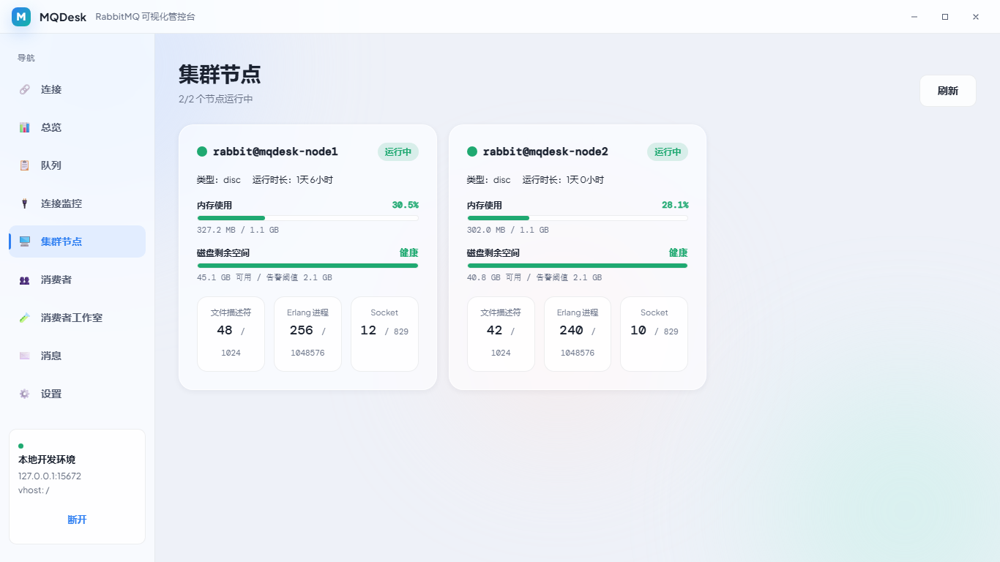
图 4-6：集群节点页面
「消费者列表」展示当前所有在线消费者，包括消费者标签、所属队列、客户端地址、连接名称、消息速率、Ack 模式、Prefetch 数量等。
队列状态异常时，可以快速判断“到底有没有人在消费这个队列”，以及消费速度是多少。
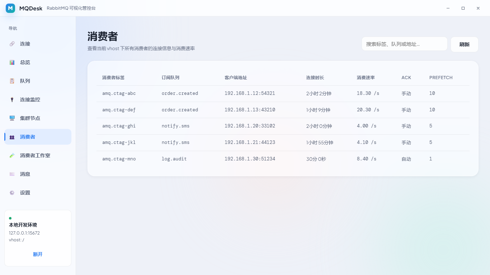
图 4-7：消费者列表页面
「连接与信道」页面展示当前连接到 RabbitMQ 的所有客户端，以及每个连接下的信道列表。
当你怀疑某个服务没有正确连接，或者连接数过多时，可以在这里看到每个连接的 IP、协议、在线时长、信道数量、消费者数、消息速率等。
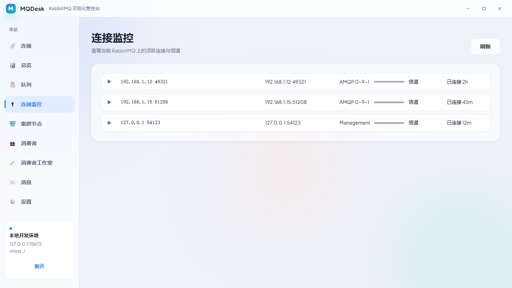
图 4-8：连接与信道监控页面
「消费者工作室」让你不用写代码，就能手动启动一个消费者，实时查看队列里的消息内容。
排查问题时，经常需要确认“消息到底长什么样”。在这里启动一个临时消费者，即可看到完整消息体、Headers，并支持手动 Ack。
| 字段 | 说明 |
|---|---|
| 名称 | 给这个消费者起个名字，方便识别 |
| 目标队列 | 选择要消费的队列 |
| 模式 | async（持续消费）或 preview（只查看不确认） |
| Prefetch | 每次从 RabbitMQ 取多少条消息到本地，默认 10 |
| 自动 Ack | 开启后消息进入即自动确认；关闭后需要手动 Ack |
| 过滤条件 | 只显示 payload 或 headers 匹配条件的消息 |
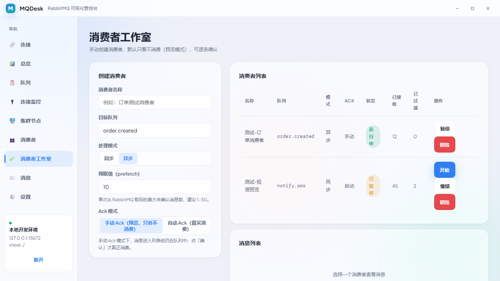
图 4-9：消费者工作室——手动启动消费者并查看消息
提示：预览模式（preview）不会真正消费消息，消息会重新入队，适合排查问题。async 模式会真实消费，请谨慎用于生产队列。
「消息」页面用于向 RabbitMQ 发送测试消息，并查看发送历史。
当你开发了新功能，想验证“程序能不能收到消息”，或者想模拟某个业务事件时，可以在这里手动发一条消息。
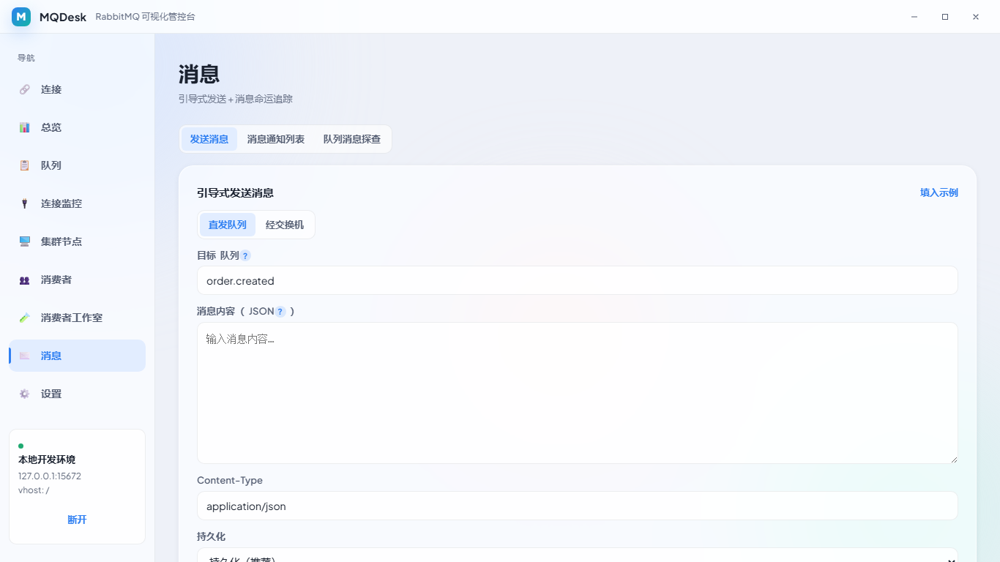
图 4-10：消息发送页面
发送成功后，页面下方的消息流会新增一条记录，包含时间、队列、状态、摘要。
「队列消息探查」用于查看指定队列中当前真实存在的消息内容，包括 Payload、Headers、Exchange、Routing Key 等，且不会真正消费消息。
业务程序发送的消息进入队列后，你想确认消息内容是否正确、是否被正常投递，但又不想触发真实消费。探查功能通过 RabbitMQ Management API 抓取队列前 N 条消息并立即重新入队，满足这个需求。
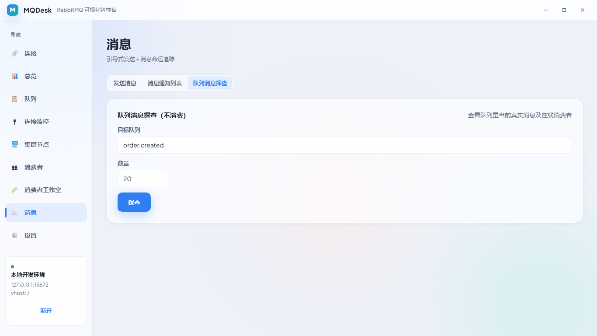
图 4-11：队列消息探查页面——查看真实消息及在线消费者
提示：探查不会删除或消费消息，适合用来排查“消息到底长什么样”“有没有被投递到正确队列”。如果想看消息是否被消费、被谁消费，可结合「消费者列表」和「消费者工作室」进一步确认。
「设置」页面用于调整应用偏好和查看帮助信息。
你可以在这里切换界面主题、控制自动刷新、学习 RabbitMQ 术语、打开本操作手册。
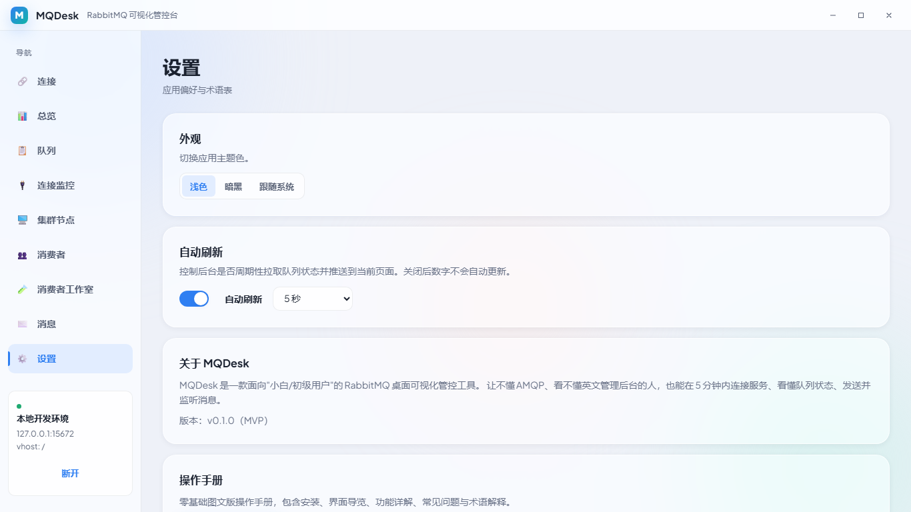
图 4-12：设置页面
设置页下方有术语表，遇到不懂的词可以在这里查看大白话解释。点击「查看操作手册」可打开本手册。
当 RabbitMQ Management API 访问失败（如网络断开、服务重启、认证过期）时，页面顶部会出现黄色警告横幅。
提醒你现在看到的数据可能是缓存，不是最新值，避免你根据过时的数字做判断。
看到横幅后，检查网络连接或 RabbitMQ 服务状态。恢复后，MQDesk 会自动刷新并隐藏横幅。
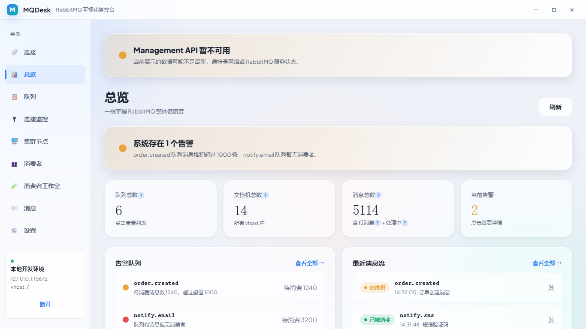
图 4-13：Management API 暂不可用时的降级提示
原因：还没有选择或保存连接。
解决：点击侧边栏「连接」→「新建连接」→ 填写信息 →「保存并连接」。
原因：用户名或密码填错了。
解决：检查用户名、密码是否正确，注意大小写。如果不确定，可以询问提供 RabbitMQ 地址的同事或运维。
含义：这个队列里有消息，但没有消费者在处理。
解决：检查对应的消费者程序是否启动，或者是否配置错误。
含义：这个队列的消息数超过了 1000 条，出现堆积。
解决：加快消费速度，或增加消费者实例。
原因：没有消费者程序处理这条消息。
解决：启动对应的消费者程序，或检查路由键是否正确。
答案：是的。关闭窗口会最小化到系统托盘，右键托盘图标选择「退出」才能真正关闭。
原因：Windows 可能把图标折叠到「显示隐藏的图标」区域。
解决：点击任务栏右下角的小箭头，找到 MQDesk 图标，拖到常驻区域。
答案：这是给键盘用户使用的无障碍快捷链接，按 Tab 键聚焦时会出现，平时不会显示。如果你一直看到它，请升级到最新版本。
原因：早期版本可能存在主题适配不完整。
解决：切换到浅色模式使用，或等待后续更新。
原因：RabbitMQ Management API 的统计信息有秒级延迟。
解决：稍等几秒再刷新，或观察自动刷新后的数字。
原因：队列里没有新消息，或过滤条件不匹配。
解决：确认队列有消息进入；检查过滤条件是否正确；切换为 preview 模式避免真实消费。
原因：当前没有客户端连接到 RabbitMQ。
解决：启动一个生产者或消费者程序，刷新后即可看到连接。
| 快捷键 | 功能 |
|---|---|
| Tab | 在按钮/输入框之间切换焦点 |
| Shift + Tab | 反向切换焦点 |
| Enter / Space | 激活当前聚焦的按钮 |
| Esc | 关闭弹窗（如果有） |
| 术语 | 大白话解释 |
|---|---|
| RabbitMQ | 一个负责在不同程序之间传递消息的软件 |
| 队列（Queue） | 存放消息的“桶”，消费者从这里取消息 |
| 交换机（Exchange） | 消息的“分拣中心”，决定消息该进哪个队列 |
| 绑定（Binding） | 交换机和队列之间的“连线规则” |
| 路由键（Routing Key） | 贴在消息上的“地址标签” |
| 消费者（Consumer） | 从队列取消息并处理的程序 |
| 待消费（Ready） | 已经躺在队列里、等着被取的消息 |
| 处理中（Unacked） | 已被取走但还没确认处理完的消息 |
| 虚拟空间（vhost） | 一块隔离的“房间”，不同项目互不干扰 |
| AMQP | RabbitMQ 用来传输消息的协议 |
| 信道（Channel） | 连接里的一个“虚拟通道”，大部分操作都在信道里完成 |
| Prefetch | 消费者一次预取多少条消息，避免一次性压垮消费者 |
| Ack | 消费者确认“这条消息我已处理完” |
| Purge | 清空队列里的所有消息，但保留队列 |
| Publisher Confirm | 发送消息后，RabbitMQ 给的“收到回执” |
| Management API | RabbitMQ 提供的 HTTP 接口，MQDesk 通过它获取数据 |
如在使用过程中遇到问题，可通过以下方式获取帮助：
手册版本记录
v0.1.0：首次编写，对应 MQDesk MVP 版本。
v0.2.0：补齐队列 Purge、绑定管理、连接/信道监控、消费者工作室、自动刷新、降级提示等功能说明。